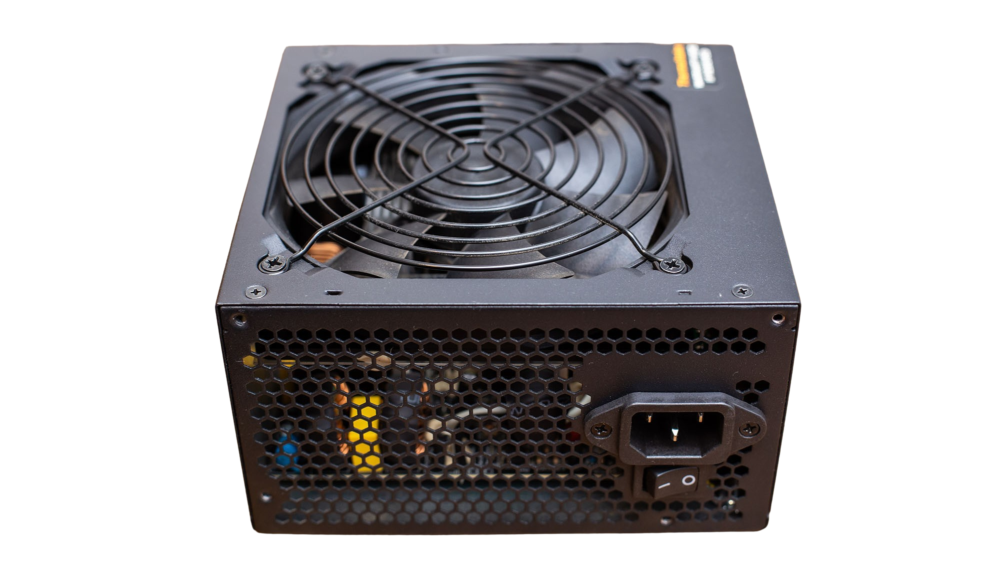

PSU jeb barošanas avots ir datora komponents, kas nodrošina nepieciešamo elektrisko enerģiju visiem datora komponentiem, piemēram, procesoram, mātesplatei, RAM, grafiskajai kartei, cietajiem diskiem un citiem komponentiem. PSU pārveido maiņstrāvas (AC) elektrību no sienas kontaktligzdas uz nepieciešamo vienvirziena (DC) strāvu, ko izmanto datora ierīces.
Galvenās funkcijas:
Strāvas piegāde: PSU nodrošina visu datora komponentu barošanu.
Strāvas stabilizācija: Tas palīdz nodrošināt stabilu spriegumu un aizsargā datoru no elektriskajiem uzliesmojumiem, pārslodzes un strāvas sprieguma svārstībām.
Efektivitāte: Mūsdienu PSU cenšas nodrošināt augstu efektivitāti, lai samazinātu enerģijas patēriņu un siltuma izdalīšanos.
Galvenie PSU parametri un to izvēle
Jauda (W): PSU jauda tiek mērīta vatos (W). Tā ir viena no svarīgākajām izvēles niansēm, jo tas nosaka, cik lielu slodzi PSU var atbalstīt. Jauda, ko vajadzēs tavai sistēmai, ir atkarīga no tā, cik jaudīgas sastāvdaļas (piemēram, procesors, grafiskā karte) tu lieto.
Ieteikumi:
Zems patēriņš (parastam biroja datoram): 400–500 W.
Vidējas veiktspējas sistēmas (spēles, video apstrāde): 500–750 W.
Augstas veiktspējas sistēmas (spēles ar augstu grafikas jaudu, darbs ar 3D modelēšanu): 750–1000 W un vairāk.
Efektivitāte:
Efektivitāte norāda, kāda daļa no izmantotās elektriskās enerģijas tiek pārveidota par noderīgu enerģiju, nevis tiek pārvērsta siltumā. PSU ar augstāku efektivitāti samazina elektroenerģijas patēriņu un mazāk izdala siltumu. Efektivitāti mēra ar 80 PLUS sertifikātu, kas norāda uz PSU veiktspēju.
80 PLUS sertifikāti:

80 PLUS: minimāla efektivitāte 80%.
80 PLUS Bronze: 82% efektivitāte pie 20%, 50%, un 100% slodzes.
80 PLUS Silver: 85% efektivitāte pie 20%, 50%, un 100% slodzes.
80 PLUS Gold: 87% efektivitāte pie 20%, 50%, un 100% slodzes.
80 PLUS Platinum: 90% efektivitāte pie 20%, 50%, un 100% slodzes.
80 PLUS Titanium: 92% efektivitāte pie 20%, 50%, un 100% slodzes.
Kāpēc izvēlēties augstāku efektivitāti? PSU ar augstāku efektivitāti varētu būt nedaudz dārgāks, taču tas nodrošinās ilgtermiņa ietaupījumus enerģijas patēriņā un mazāku siltuma izdalīšanos.
Sertifikāti un aizsardzība: Labs PSU modelis piedāvā dažādas aizsardzības funkcijas, lai aizsargātu datoru no elektriskajiem bojājumiem. Daži svarīgākie sertifikāti un aizsardzība ir:
OCP (Over Current Protection) – aizsargā no pārslodzes ar pārmērīgu strāvu.
OVP (Over Voltage Protection) – aizsargā no pārāk augsta sprieguma.
UVP (Under Voltage Protection) – aizsargā no pārāk zema sprieguma.
SCP (Short Circuit Protection) – aizsargā no īssavienojumiem.
OTP (Over Temperature Protection) – aizsargā no pārkaršanas.
Pieslēguma veidi: PSU jāizvēlas atbilstoši mātesplates un citu komponentu pieslēguma prasībām. Biežāk sastopamie pieslēguma veidi ir:
SATA un Molex savienotāji: Pieslēgumi cietajiem diskiem un citām perifērijas ierīcēm.
Piezīme: Ja plāno pievienot vairākas grafiskās kartes vai jaudīgākas ierīces, pārliecinies, ka PSU ir pietiekami daudz PCIe savienotāju.
Modulāri vai nemodulāri PSU:
Nemodulāri PSU: Visi kabeļi ir fiksēti un nevar tikt atvienoti. Tie ir lētāki, taču var radīt liekus kabelus, kas traucē labu gaisa plūsmu un veiktspēju.
Modulāri PSU: Ļauj pievienot tikai tos kabeļus, kas ir nepieciešami. Tas palīdz samazināt kabeļu jucekli un uzlabot gaisa plūsmu, bet parasti ir dārgāki.
Izmēri un forma (ATX, SFX):
ATX PSU: Standarta lielums, kas ir visbiežāk sastopams parastos datoros.
SFX PSU: Kompaktāka versija, kas paredzēta mazākām mātesplatēm un datoriem, kas nepieciešams mazāks PSU.
Kā izvēlēties pareizo PSU?
Aprēķini vajadzīgo jaudu: Pirms izvēles aprēķini, cik daudz jaudas tavai sistēmai būs nepieciešams. Tu vari izmantot tiešsaistes jaudas kalkulatorus, kas palīdzēs noteikt nepieciešamo jaudu atbilstoši izvēlētajām komponentēm.
Izvēlies pareizu efektivitāti: Ja plāno izmantot datoru ilgtermiņā, izvēlies PSU ar vismaz 80 PLUS Bronze sertifikātu. Ja vēlies labāku veiktspēju un mazāku enerģijas patēriņu, izvēlies 80 PLUS Gold vai Platinum sertifikātu.
Pievērs uzmanību komponentiem: Pārliecinies, ka PSU ir pietiekami daudz savienotāju, lai atbalstītu visas tavās sistēmās esošās komponentes (piemēram, vairākas grafiskās kartes).
Izvēlies ar atbilstošām aizsardzības funkcijām: Mūsdienīgām barošanas iekārtām jābūt ar aizsardzību pret pārslodzi, sprieguma svārstībām un īssavienojumiem.
Pievērs uzmanību zīmolam un garantijai: Izvēlies uzticamus PSU ražotājus, piemēram, Corsair, EVGA, Seasonic vai be quiet!, kas piedāvā augstas kvalitātes produktus ar labu garantiju.
Ieteikumi:
Ikdienas lietotājiem un biroja datoriem: 400–600 W PSU ar 80 PLUS Bronze vai augstāku efektivitāti.
Vidējas klases spēļu datoriem: 600–750 W PSU ar 80 PLUS Gold efektivitāti.
Augstas veiktspējas spēļu un darba stacijām: 750 W un vairāk ar 80 PLUS Gold vai Platinum efektivitāti.
Izvēloties pareizo PSU, vari nodrošināt, ka tavs dators darbosies stabilāk, un tas ilgtermiņā palīdzēs ietaupīt enerģiju, samazināt siltuma izdalīšanos un izvairīties no elektroenerģijas problēmām.